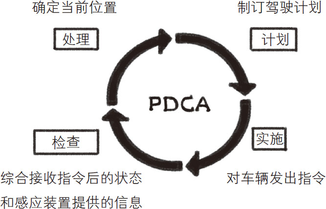
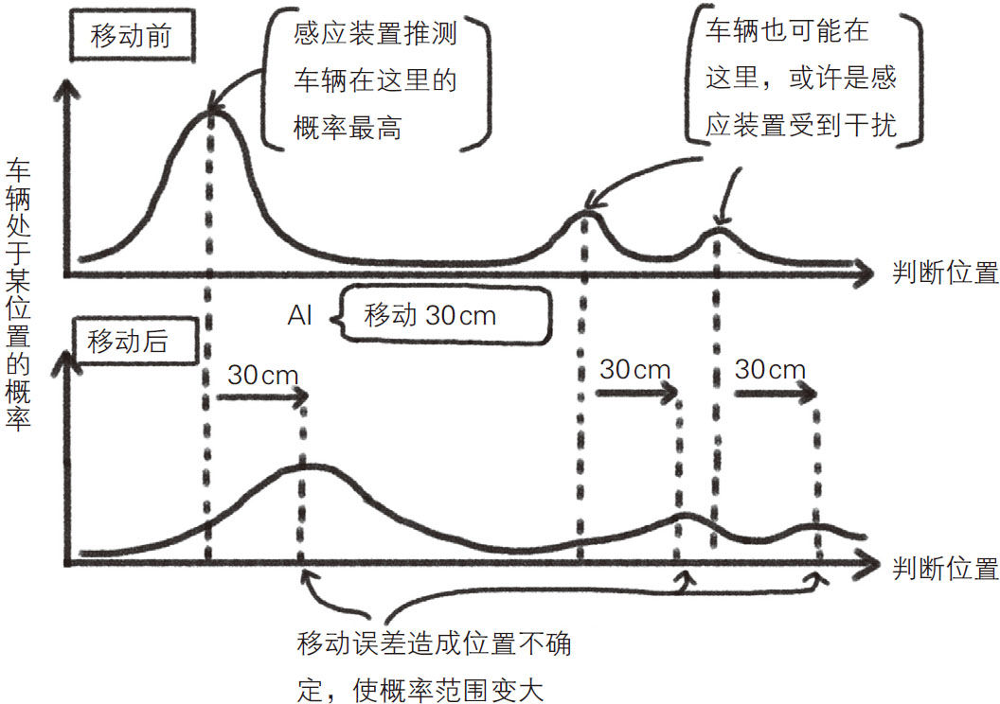
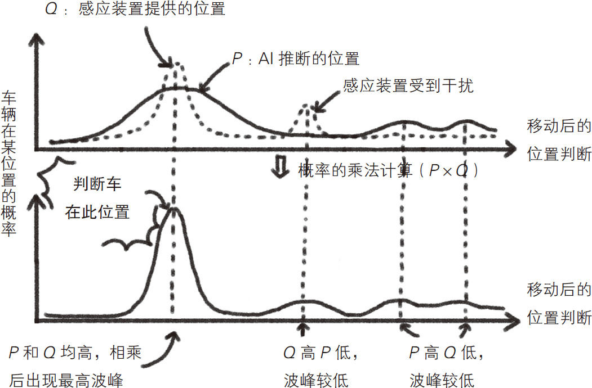

一家人出门自驾游时，长途驾驶是一项不轻的体力活。老婆和孩子玩累了可以在车上休息，老公却不得不彻夜开车。不过再过几十年，这样的情景极有可能成为历史。
自动驾驶汽车能够带人们去想去的地方，这梦一般的技术，如今正在逐渐变成现实。不仅特斯拉、丰田、福特等汽车制造商，连谷歌等IT企业也在投入巨资进行相关研发，全世界的“自动驾驶汽车”研究正如火如荼地进行着。
自动驾驶汽车依靠雷达传感器、激光测距仪和视频摄像头等部件来感知其他车辆。了解了周围的交通状况后，汽车在行驶过程中就能自动保持安全车距，当发现前方有行人或自行车等障碍物时，可以瞬间反应过来，从容应对。同时，车内安装的全球定位系统（global positioning system，简称GPS）能实时获取汽车的准确位置，根据地图进行导航。
乍一看，读者或许会认为对于自动驾驶汽车来说，GPS发出的定位信息是最重要的，但事实上并非如此。GPS是一种通过卫星进行定位的无线电导航系统，可向地球上任何位置的GPS接受器提供地理位置信息。尽管这样，定位的误差还是难以避免的。车上装有导航的人可能有过这样的经历：导航上显示的位置与实际位置相差很大，你甚至会发现自己居然正行驶在海上。这一方面是因为GPS本身的精度有限，另一方面，当GPS与卫星之间的通信失败时，导航会根据汽车轮胎的运动信息等来推测车辆的当前位置。
由此看来，自动驾驶汽车光有导航系统是远远不够的。如果自动驾驶汽车单纯依靠GPS来行驶，那就是极危险的。因此，对于自动驾驶汽车来说，GPS只是一个辅助工具，要得到准确的定位信息，还要依靠车上的感应装置。
值得注意的是，感应装置也不是万能的，也存在定位误差，所以其提供的位置信息不可全信。在实际行驶中，仅仅几厘米的误差也可能酿成重大交通事故。因此，我们在每台自动驾驶汽车上都搭载了人工智能（artificial intelligence，简称AI）技术，AI可以结合感应装置提供的信息和其自身的判断来得到当前汽车的精确位置。
自动驾驶汽车使用AI技术就像企业家拓展业务一样，使汽车处于有计划的驾驶状态。在大企业工作过或自主创业的人肯定都听过“PDCA循环”一词。这是一种通过“P＝Plan（计划）→D＝Do（实施）→C＝Check（检查）→A＝Act（处理）”的循环过程来保障业务推进的质量管理体系，它起源于美国，后来在全世界被广泛运用。如果把自动驾驶汽车的AI技术看作根据PDCA循环来运行的，就可以简单明了地演绎自动驾驶功能的工作原理，如图3-15所示。

图3-15 自动驾驶汽车的工作原理
首先，AI技术根据汽车当前的位置制订驾驶计划。例如，如果当前汽车即将越线逆行，AI就会制订改变行驶方向、回归正确车道的驾驶计划；接下来就是实施这一计划；然后，结合汽车之前的位置信息和驾驶计划，判断当前的位置。例如，执行了远离对向车线方向30 cm的驾驶计划后，当前位置应在距离之前位置约30 cm处。
这里需要注意一个问题，既然位置信息来自感应装置和GPS信号，而二者都可能存在误差，那么AI对当前位置的判断就可能不准确。例如，一旦感应装置受到干扰，就会出现无法完全确定当前位置的情况，如图3-16所示。况且车辆本身在行驶时也会产生误差，虽然汽车接收到的是移动30 cm的指令，但实际移动距离可能是31 cm或29 cm，由此判断的汽车最新位置也会变模糊。在图3-16中，表示“车辆可能在这里”的标识出现的概率也相应地提高了。

图3-16 感应装置受到干扰对判断车辆所在位置的影响
因此，AI技术会在汽车移动后，综合感应装置发来的新信息和内部计算装置推断的汽车位置，进行对比，从而更新判断，这相当于“检查（Check）—处理（Act）”的过程。这个过程应用了“贝叶斯定理 ”。
贝叶斯定理是由18世纪英国数学家托马斯·贝叶斯发现的，是一种根据新数据进行合理推论的数学理论，是统计学领域非常重要的定理。当然，贝叶斯定理在其他领域也被广泛应用，自动驾驶汽车就应用了这个定理，根据感应装置提供的数据更新汽车所在位置。它的原理非常简单，只需根据AI技术的推断和感应装置提供的位置信息，分别画出概率波峰并相乘即可。当AI技术的推断与感应装置提供的信息一致时，波峰就会变高；二者不一致时，波峰就会变低。通过这种方式可以找到可能性最高的位置。也就是说，AI技术和感应装置的信息一致的点，被视为汽车当前的位置 。
可以说，贝叶斯定理是利用计算机来模仿人类的学习过程。例如，在对新产品的销售额做预测时，我们通常会先根据现有资料信息做一个预估，然后再依照指定店铺的预售结果来修正之前的预估。类似地，自动驾驶汽车使用的AI技术也是在进行预测之后，结合来自感应装置的信息，对之前的预测结果进行不断的修正。
贝叶斯定理是一个理论的名字，它的实际应用方法有很多。用于自动驾驶技术的有直方图滤波定位、卡尔曼滤波定位、粒子滤波定位等方法，它们各有特点，需要根据具体情况来选择，但都是以贝叶斯定理为基础的。
直方图滤波定位法 是将地面划为格子状，对每个区域逐一进行概率相乘，如图3-17所示。这种方法比较容易理解，但是如果想提高准确度，就需要把格子进一步细化，这样一来计算量势必大增，导致计算时间变长。

图3-17 根据贝叶斯定理判断车辆位置
卡尔曼滤波定位法 假定车辆处于当前位置的概率呈正态分布，即左右对称的钟形。使用这个方法时不需要考虑概率的分布，因而可以高效处理数据。但是，由于这种方法忽略了概率分布的不均，一律视为正态分布，所以在正确性方面稍为逊色。
粒子滤波定位法 是根据推断的概率分布来进行大规模模拟的方法。首先在计算机中做出无数汽车的数据分身（粒子）来模拟汽车的行驶情况，然后将大多数粒子的平均位置视为现实生活中汽车的实际位置。如果使用这个方法，即使出现概率分布不均或因感应器受到干扰而出现多个概率波峰等情况，也可以在实际计算时将它们都考虑进去。但是，这种方法计算量会比较大。
也就是说，正确性和计算速度是无法兼顾的。因此我们需要根据实际情况选择合适的方法。有了上述方法，加上反复进行PDCA循环，自动驾驶汽车就能很安全地行驶了。需要注意的是，自动驾驶汽车中使用的AI技术，永远不可能知道车辆的“真正位置”，因为GPS和感应装置再怎么精确定位，也不可能消除误差。因此，自动驾驶汽车本质上还是基于AI技术的“推论”来行驶的。
由此看来，就算今后自动驾驶汽车普及了，想达到零事故驾驶，仍然非常困难。哪怕自动驾驶每年的交通事故发生率仅为万分之一，如果有一亿辆车在行驶，就会发生1万次交通事故。当然，感应装置和GPS的精度还会不断提高，但机械设备总归无法完美。